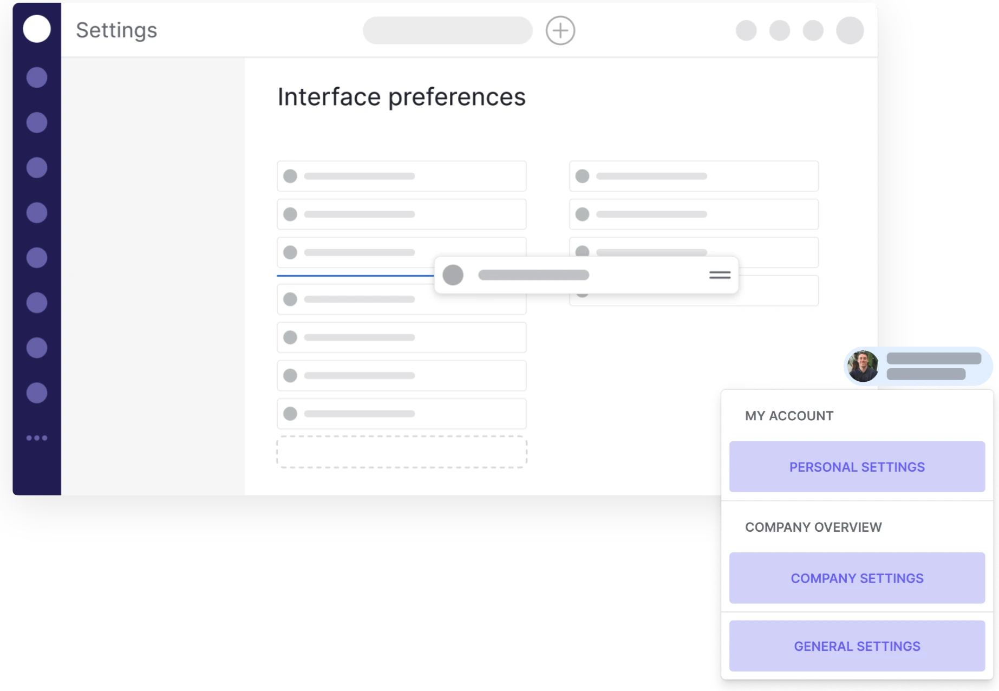
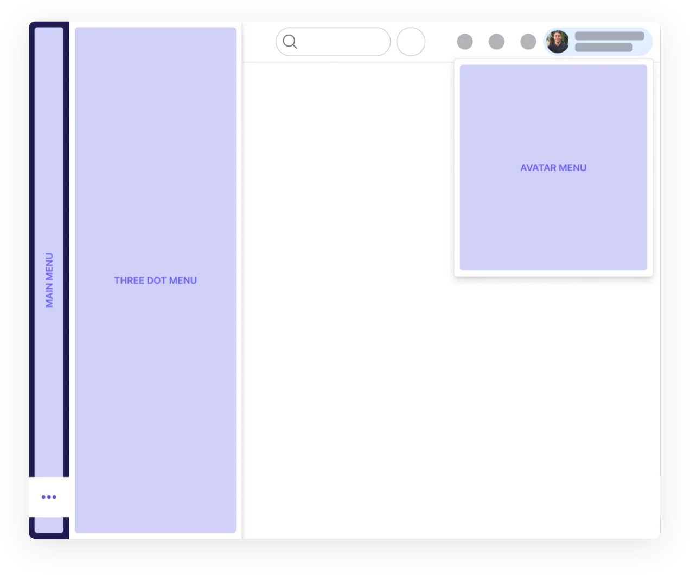
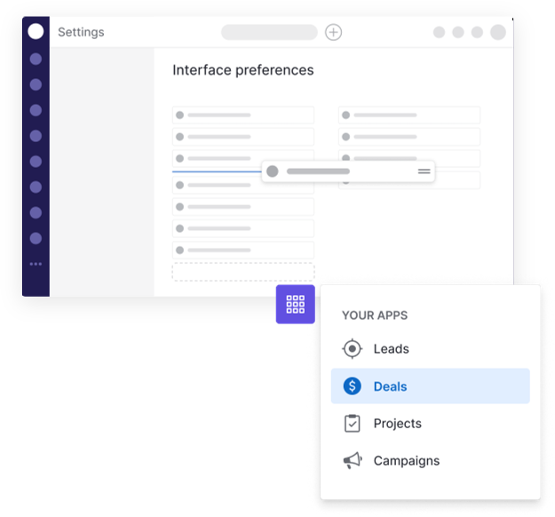

Pipedrive customisable navigation
Restructuring the CRM navigation for a better experience and feature discovery, and letting users customise it.

As the product grew and added new features, the main menu grew too, with many new icons. More and more users asked to remove items they don't use daily.
The menu could no longer scale and there was no clear logic to the information architecture. Some features had multiple entry points, and the teams behind them competed for navigation placement to increase traction.
Customer feedback
“User would like to edit the main sidebar menu: we would be able to adjust the positioning of the tools to place tools we find most important at the top etc.”
“User wants to be able to remove items from the left menu.”
“User would like to be able to hide or remove items from the left sidebar menu.”
Customisation, or better architecture?
Customers clearly wanted to customise the menu, but we wanted to make sure the underlying problem wasn't poor information architecture that could be solved by restructuring the navigation.
We knew the current setup's information architecture was weak, so we aimed to improve the default setup and also let users customise the menu.
- Some pages in navigation are visited very often, others not at all
- Admin users behave differently from regular users
How people actually look for things
To learn more about how navigation was used, we interviewed users. Among other things, we found that:
- Information is searched for first in the main menu, then the three‑dot menu, then the avatar menu
- Users don't understand the difference between the three‑dot and avatar menus
- Some pages are hard to find
- Participants at 100% zoom couldn't see the entire navigation

A new information architecture
Using what we'd learned from research, we mapped the current navigation, identified duplicate entry points and created a new information architecture.
This produced these sections: primary menu, three‑dot menu, quick help, avatar menu, four‑item menu, settings, and tools and apps.

Three rounds of usability testing
The first round was internal, with two versions to validate the new default structure. Both prototypes used a new suite‑based logic that focused more on solving the business problem.
The second round was external. We tested the stronger version from round one against a new version that wasn't built around product suites and gave users more flexibility. This round also introduced customisation.
In the final round we settled the default menu on non‑suite logic, since it had performed better. We tested two versions of customisation with users and chose the first.
Users wanted control and flexibility
One hypothesis we tested was introducing suites, which separate the product by the jobs users want to get done. It solved our business problem, but users wanted more control and flexibility.
Of the two customisation versions we showed, users found a dedicated page easier to understand than customising directly in the navigation. We called it Interface preferences and added controls such as choosing a landing page and turning off keyboard shortcuts.

Change where it helps, stability where it matters
For the final release, the default main menu kept all current menu items (up to 10) to avoid change aversion. Most of the entry‑point reshuffling happened in the “more” menu, avatar menu, settings, and tools and apps pages.
On the Interface preferences page, users could hide and move items in the main and “more” menus.
To avoid future navigation architecture issues, we documented a navigation framework for other teams to follow.
The avatar menu was restructured to follow the three sections documented in the guidelines.
What changing navigation touches
Risk mitigation
Product teams worried that moving entry points would hurt their feature discovery. We created a risk mitigation plan in case the changes backfired.
Saving patterns
The project highlighted the different saving patterns across product pages. Customisation needed manual saving, while some other settings pages use autosave.
System visibility
Customer‑facing teams worried about troubleshooting without knowing a user's navigation setup. We built a back‑office view of each user's setup.
IA changes affecting UI
Because we removed a submenu layer, product teams had to review how containers were structured in their pages to make sure the layout scaled with the new navigation.
Highly anticipated, and it works
Users said the feature was long awaited and worked well. They also asked for more items to be customisable, which we had anticipated and used as input for future improvements.
Measuring navigation over time
We closely monitor daily tools. We also track:
- the most popular landing page choices
- the most popular pages added to the main menu
- the most hidden pages
These metrics inform design decisions about both navigation and user behaviour.